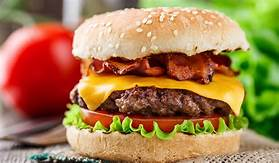

CHEESE AND BECON BURGER
cheeseburger is a hamburger topped with cheese. Traditionally, the slice of cheese is placed on top of the meat patty. The cheese is usually added to the cooking hamburger patty shortly before serving, which allows the cheese to melt. Cheeseburgers can include variations in structure, ingredients and composition. As with other hamburgers, a cheeseburger may include toppings such as lettuce, tomato, onion, pickles, bacon, mayonnaise, ketchup, and mustard. In fast food restaurants, the cheese used in cheeseburgers is usually processed cheese. Other meltable cheeses may be used as alternatives. Common examples include cheddar, Swiss, mozzarella, blue cheese, and pepper jack.
CLASSIC BECON BURGER R120
CHEESE CULD BECON BURGER R110
JUICY CHEESE BURGER R122